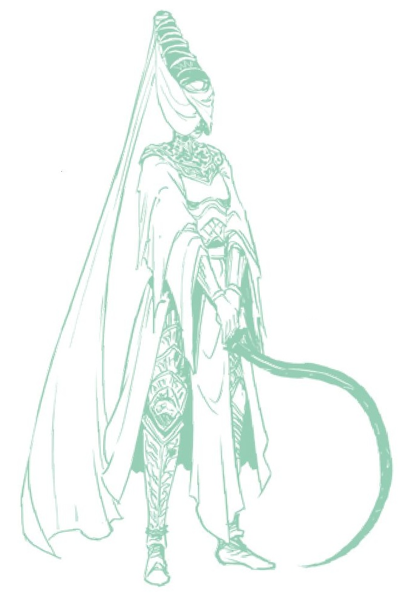

monges caem mais abaixo na hierarquia.
Tudo isso me leva a acreditar que a sociedade Noxiana é um matriarcado. A evidência mais óbvia para isso são as próprias Donzelas da Noite: uma posição exclusivamente feminina que engloba o mais importante poder religioso e político. Suas guardas pessoais também são uma ordem de guerreiras exclusivamente femininas; até as estátuas e gravuras nos baús Nox são todas femininas.
Também se deve considerar o fato de que Marika, uma vez parte desta sociedade Numen antes de se tornarem os Nox, também é feminina, e foi a figura escolhida entre o número deles para ser o vaso da Vontade Maior.
Além disso, podemos considerar o fato de que os Esqueletos Gigantes nos tronos são femininos. (Estes são monumentos importantes que também discutiremos mais tarde.) Finalmente, os principais seres escolhidos pela lua também são femininos: Rennala, Rainha da Lua Cheia e Ranni da Lua Negra, sugerindo que há alguma conexão entre o feminino e a lua. Este é um tema que foi explorado superficialmente nos jogos Souls anteriores, mas é tornado muito mais explícito aqui.
Então, com uma compreensão básica da composição desta sociedade, vamos agora examinar algumas das extensas e impressionantes inovações dos Nox.
CIÊNCIA DA
NOITE
De muitas maneiras, as crenças Noxianas em relação à astrologia, destino e estrelas são muito precursoras das práticas que vemos adotadas pelos Preceptores da família real Cariana. Por exemplo, foram os Nox que desenvolveram a técnica de manipulação do destino, conhecida por nós como marionetaria. Isso mais tarde seria revivido pelos reais Carianos, que vemos claramente usando Marionetes para compensar a falta de números durante seu conflito com Raya Lucaria.
Aprendemos que esta é uma prática Noxiana a partir da descrição do item Fragmentos de Luz Estelar, que diz:
“Um item precioso que foi usado uma vez na Cidade Eterna como ingrediente em bebidas intoxicantes.”
- Fragmentos de Luz EstelarEsta bebida intoxicante é a poção que Seluvis mais tarde prepara para escravizar pessoas como suas Marionetes. Podemos extrapolar que é o destino latente dentro das estrelas que está sendo manipulado para alcançar isso, lendo a descrição do item Luz Estelar Âmbar: